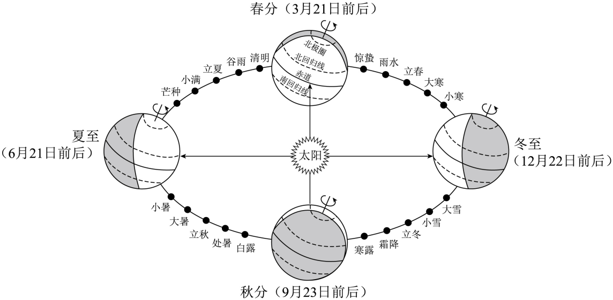
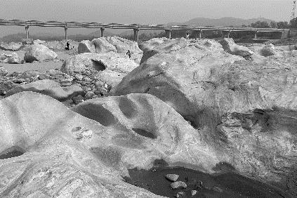
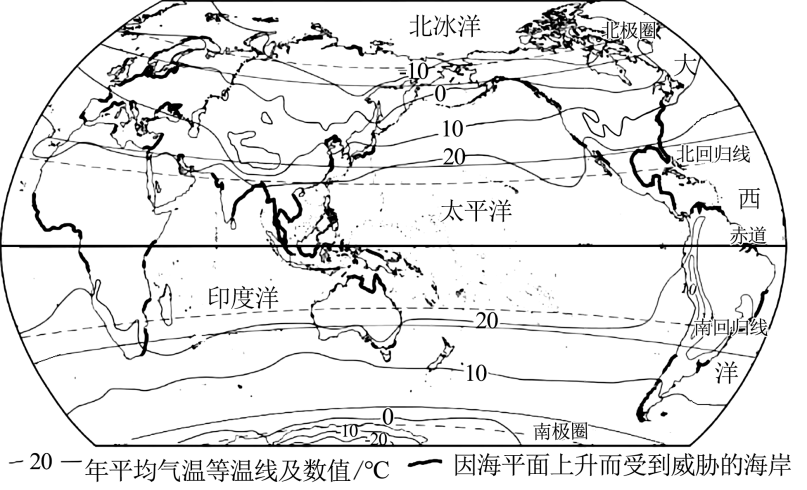

2024年北京市房山区初中学业水平考试地理试卷 · 选择题 第1、2、3、4、5题
二十四节气能反映季节的变化，指导农事活动，影响着人们的衣食住行。如图为二十四节气示意图。读图，完成下面小题。

1. 下列节气顺序正确的是（ ）
A 小暑—大暑—立秋—处暑B. 夏至—春分—冬至—秋分
小暑—大暑—立秋—处暑B. 夏至—春分—冬至—秋分
C. 大雪—小雪—立冬—霜降D. 立夏—立春—立冬—立秋
2. 北京地区小麦收割时间大致为6月中下旬，其对应的节气可能是（ ）
A 小寒B. 惊蛰C. 夏至D. 大雪
3. 二十四节气变化的主要原因是（ ）
A. 地球自转B. 地球公转C. 板块运动D. 海陆变迁
2023年7月31日洪水之后，房山区镇江营村拒马河出现巨石滩。专家称目前巨石滩岩层中保留的绝大部分纹理图案都是距今约15亿年的海洋藻类生长过程中留下的痕迹。如图为巨石滩照片。读图，完成下面小题。

4. 在巨石滩岩层中保留海洋藻类生长痕迹，由此推测该地区（ ）
A. 15亿年前是陆地B. 一直都是海洋
C. 15亿年前是海洋D. 一直都是陆地
5. 让巨石滩景观“重见天日”的自然灾害可能是（ ）
A. 台风B. 寒潮C. 霜冻D. 洪涝
某地理小组在地理课上学习到全球变暖导致海平面上升的问题，并就此展开进一步探究。如图为世界年平均气温分布及因海平面上升而受到威胁的海岸分布图。读图，完成下面小题。
